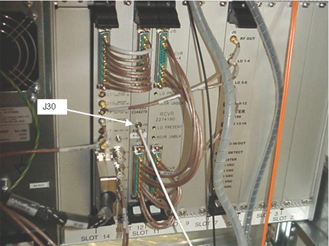
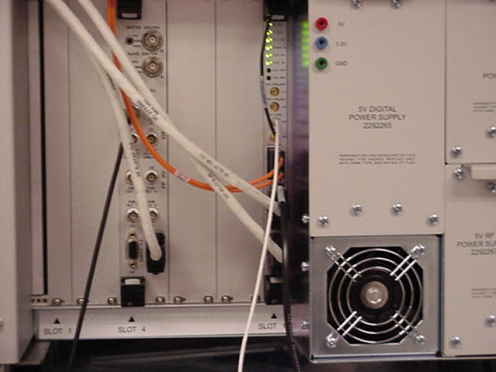

- 00000018WIA30F20030GYZ
- id_131070971.5
- Jul 6, 2019 12:17:31 AM
Spike Noise Check
Prerequisites
| Required persons | Preliminary requirements | Procedure | Finalization |
|---|---|---|---|
| 1 | Not Applicable | 60 minutes | Not Applicable |
| Item | Quantity | Effectivity | Part number | Manufacturer |
|---|---|---|---|---|
| 100 mHz storage oscilloscope, Tektronix® 468 or equivalent | 1 | - |
46-183029P61 46-183029P64 | - |
| TPS RF Service Interface Kit | 1 | - |
46-301927G1 | - |
| SMB-femal to BNC-mail Test Cable (usually in item 2, above) | 1 | - |
46-301549P5 | - |
| Body TLT Sphere Phantom | 1 | - |
46-265635G6 | - |
| Long Body Loader or SPT Body Loader | 1 | - |
46-287902G1 2135652-2 | - |
| ||||||||
Hardware Preparation for Spike Noise Data Collection
Procedure
- Remove the front panel from the Systems Cabinet.
- Disable the RF Output from the RRF Master Exciter by setting the RF Out toggle switch (located on the RRF front panel I/O board) to the Disable position.
- Set the oscilloscope to 1M ohm impedance.
- Connect the oscilloscope power plug to the service outlet of the system
cabinet to prevent ground loops that may cause higher floor noise. .
- Channel 1 to J30 on the RRF UTNS Slot 12, using test cable 46-301549P5.
(See Figure 1.)
Figure 1. LOCATION OF UTNS J30 RECEIVER 
- Channel 2 to Receiver, IN VIEW. See Figure 2.
Figure 2. SPIKE NOISE POWER SUPPLY 
- External Trigger to J7 Scope Trigger on the RRF Front Panel I/O board.
- Channel 1 to J30 on the RRF UTNS Slot 12, using test cable 46-301549P5.
(See Figure 1.)
- Set up the oscilloscope as follows:
- Channel 1 - 5 mV/div, 1 mW input
- Channel 2 - 5 V/div, 1 mW input
- Time Base - 5 msec/div
- Trigger - auto, external
Spike Noise Scan Preparation
Procedure
Sample Noise Data Collection and Analysis
Procedure
Image Data Collection/Analysis
Procedure
- Setup using Long Body Loader. Position the body TLT sphere in the center
of the long body loader and landmark per Figure 6
Figure 6. LONG BODY LOADER AND TLT PHANTOM SETUP 
- Display and examine each of the twenty images for tweed-like or stripe-like artifacts. See Figure 7. If artifacts are present, use the procedures described in the EPI White Pixel Troubleshooting Guide to troubleshoot the system.
Figure 7. TLT SPHERE WITH TYPICAL ARTIFACTS 
What to do next
Finalization
No finalization steps.